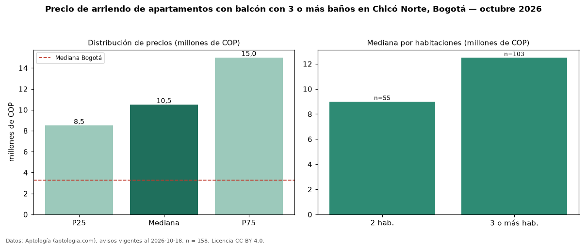

Precio de arriendo de apartamentos con balcón con 3 o más baños en Chicó Norte, Bogotá — octubre 2026
En Chicó Norte, Bogotá, la mediana de canon mensual de apartamentos con balcón con 3 o más baños es COP 10,50 millones, según 158 avisos vigentes. Frente a la mediana de los apartamentos con balcón en arriendo de Chicó Norte (COP 7,00 millones, n = 371), queda 50 % por encima; este segmento reúne el 43 % de esos avisos. Por metro cuadrado, la mediana es COP 67.989/m² al mes (n = 152), 7 % por debajo de los apartamentos con balcón en arriendo de Chicó Norte (COP 73.050/m²). El área mediana anunciada es 154 m². El segmento con más oferta es el de 3 o más habitaciones (103 avisos, mediana COP 12,50 millones); pasar de 2 habitaciones a 3 o más habitaciones cambia la mediana +39 %. La administración mediana declarada es COP 1,57 millones al mes (n = 95), aparte del canon. El estrato más frecuente es 6 (96 % de los avisos con estrato). La mitad central de los avisos va de COP 8,50 millones a COP 15 millones (razón 1,8), una dispersión moderada. Datos: Aptología (aptologia.com), CC BY 4.0 — https://www.aptologia.com/arriendo/bogota/chico-norte. Archivos: PDF, CSV con las cifras y gráfica PNG.

| Avisos únicos | 158 |
|---|---|
| Percentil 25 | COP 8.500.000 |
| Mediana | COP 10.500.000 |
| Percentil 75 | COP 15.000.000 |
| Mediana por m² | COP 67.989 |
Fuente: avisos vigentes de portales inmobiliarios recopilados por Aptología, deduplicados (mínimo 30 avisos únicos por celda). Precios pedidos, no cerrados. Fecha: 2026-10-18.